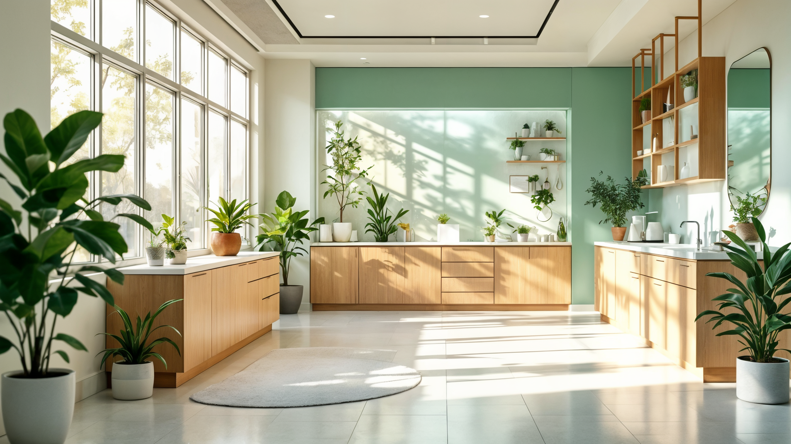

Independent software + AI studio
ดาวประจำเมือง : แสงแรกที่ใช้นำทางยามค่ำ
Vesperwerk / systems studio
An independent software and AI studio. We architect, build, and operate production systems for businesses that cannot afford them to fail.
Scroll to trace the system. Click any node to fire a request.
Service 01 / node
AI Systems
Voice agents, LLM assistants, and the evaluation infrastructure that keeps them honest. AI that answers like your best employee, in production, around the clock.
spec : voice agents . llm assistants . evaluation harness
Service 02 / node
Product Engineering
Full-stack product engineering from architecture to operations: event-driven backends, modern web frontends, and infrastructure that scales without drama.
spec : event-driven backends . web frontends . infra
Service 03 / node
Commerce and Platforms
Deep Shopify and LINE platform work: storefronts, admin apps, integrations, and the messaging rails Southeast Asian commerce runs on.
spec : shopify . line . storefronts . integrations
Selected work / flagship trace
Yimwhan AI
An AI voice and LINE assistant for dental clinics in Thailand. It answers after-hours calls, books and reschedules appointments, and hands off to staff the moment a human matters. In production at live clinics.

Approach / annotations pinned to the diagram
01
Architecture first
We design the system before we write the code.
pins : whole system
02
Production-worthy
Demos impress; production endures. We build for the second one.
pins : data store
03
Scope discipline
The most valuable thing we tell clients is what not to build.
pins : gateway
04
Senior hands
No juniors learning on your budget. Founder-led, senior hands on every line.
pins : every service
About / the evening star
The first light you navigate by
Vesperwerk takes its name from the evening star: the first light you can navigate by. We are a founder-led studio in Bangkok building software for businesses across Asia and beyond.
Contact / ingress
Start a conversation
kittipong.k@vesperwerk.comBangkok, Thailand